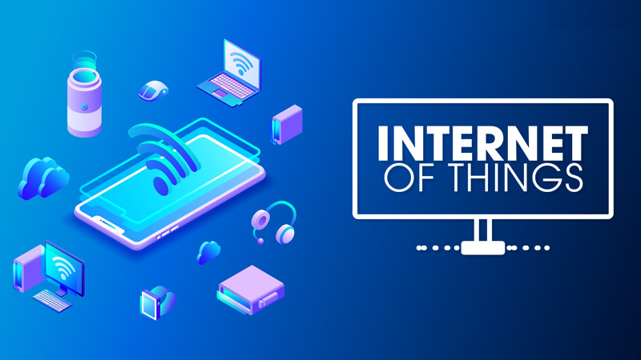

🧑🏻‍💻 IoT và Hệ Thống Tản Nhiệt#
Giới thiệu tổng quan hệ thống IoT#
Giới thiệu#
✍️ Internet vạn váºt (IoT) là mạng lưới kết nối các thiết bị váºt lý, phương tiện, con người và các đối tượng khác được nhúng với các cảm biến, phần má»m và kết nối mạng để thu tháºp và trao đổi dữ liệu. IoT có tiá»m năng to lớn để thay đổi cách thức chúng ta sống, là m việc và tương tác với thế giới xung quanh.

Tại sao IoT lại quan trá»ng như váºy?#
✍️ Trong và i năm qua, IoT đã trở thà nh một trong những công nghệ quan trá»ng nhất của thế ká»· 21. GiỠđây, chúng ta có thể kết nối các váºt dụng hà ng ngà y—thiết bị nhà bếp, ô tô, máy điá»u nhiệt, thiết bị giám sát trẻ em—với Internet thông qua các thiết bị nhúng, nên có thể thực hiện giao tiếp liá»n mạch giữa con người, quy trình và má»i thứ.
Bằng phương tiện điện toán chi phà thấp, đám mây, dữ liệu lớn, phân tÃch và công nghệ di động, váºt chất có thể chia sẻ và thu tháºp dữ liệu với sự can thiệp tối thiểu của con người. Trong thế giới siêu kết nối nà y, hệ thống kỹ thuáºt số có thể ghi lại, giám sát và điá»u chỉnh từng tương tác giữa những thứ được kết nối. Thế giới váºt chất gặp gỡ thế giới kỹ thuáºt số—và chúng hợp tác với nhau.

Ưu và Nhược điểm của IoT#
😠Ưu điểm:
Nâng cao hiệu quả hoạt động: IoT giúp tự động hóa các quy trình thủ công, thu tháºp dữ liệu thá»i gian thực và đưa ra quyết định dựa trên dữ liệu, từ đó nâng cao hiệu quả hoạt động trong nhiá»u lĩnh vực.
Tiết kiệm năng lượng và chi phÃ: IoT giúp tối ưu hóa việc sá» dụng năng lượng, giảm thiểu lãng phà và tiết kiệm chi phà váºn hà nh trong nhiá»u lĩnh vực như nhà thông minh, thà nh phố thông minh, sản xuất thông minh, v.v.
Cải thiện chất lượng cuộc sống: IoT mang đến các tiện Ãch và dịch vụ mới, giúp nâng cao chất lượng cuộc sống trong nhiá»u lĩnh vực như chăm sóc sức khá»e, giáo dục, giải trÃ, v.v.
Tạo ra các dịch vụ mới: IoT mở ra cơ hội phát triển các dịch vụ mới dựa trên dữ liệu, đáp ứng nhu cầu ngà y cà ng đa dạng của người dùng.
Nâng cao năng lực cạnh tranh: Doanh nghiệp áp dụng IoT có thể nâng cao năng lực cạnh tranh bằng cách tăng hiệu quả hoạt động, giảm chi phà và tạo ra các dịch vụ mới.
Tăng cường khả năng thÃch ứng với môi trường: IoT giúp thu tháºp dữ liệu vá» môi trường và đưa ra các dự báo, hỗ trợ con người thÃch ứng với các thay đổi môi trường.
🥹 Nhược điểm:
An ninh mạng: Các thiết bị IoT có thể bị tấn công mạng, dẫn đến rò rỉ dữ liệu và ảnh hưởng đến an ninh mạng.
Bảo máºt dữ liệu: Việc thu tháºp và sá» dụng dữ liệu cá nhân cần được thực hiện một cách minh bạch và có trách nhiệm để đảm bảo bảo máºt dữ liệu.
TÃnh tương thÃch: Các thiết bị IoT từ các nhà sản xuất khác nhau cần có khả năng tương tác với nhau để tạo ra hệ thống IoT thống nhất.
Khả năng mở rộng: Hệ thống IoT cần có khả năng mở rộng để đáp ứng nhu cầu ngà y cà ng tăng.
Quyá»n riêng tư: Việc thu tháºp và sá» dụng dữ liệu cá nhân cần được thực hiện một cách minh bạch và có trách nhiệm để đảm bảo quyá»n riêng tư của người dùng.
Năng lực nguồn nhân lực: Cần có đội ngÅ© nhân lực có trình độ để triển khai và váºn hà nh hệ thống IoT.
Ứng dụng của IoT: Nâng tầm cuộc sống#
ğŸ Nhà thông minh: Điá»u khiển từ xa (báºt/tắt đèn, điá»u chỉnh nhiệt độ,…), tự động tưới cây, tự động điá»u chỉnh ánh sáng, giám sát an ninh,…
🢠Thà nh phố thông minh: Hệ thống đèn tÃn hiệu thông minh, quản lý giao thông hiệu quả, giảm tắc nghẽn và ô nhiá»…m, hệ thống cảm biến theo dõi chất lượng không khÃ, nước, cảnh báo ô nhiá»…m và xá» lý kịp thá»i, hệ thống thông minh tối ưu hóa việc sá» dụng năng lượng, tiết kiệm chi phà và bảo vệ môi trường….
🌾 Nông nghiệp thông minh: Hệ thống tưới nước thông minh dựa trên độ ẩm đất, tiết kiệm nước và tối ưu hóa năng suất, hệ thống bón phân theo nhu cầu cây trồng, giảm chi phà và tăng hiệu quả, hệ thống cảm biến theo dõi tình trạng cây, phát hiện sâu bệnh và đưa ra giải pháp kịp thá»i….
🧠Sản xuất thông minh: Hệ thống thông minh theo dõi và điá»u khiển dây chuyá»n sản xuất, đảm bảo hiệu quả và chất lượng, hệ thống phân tÃch dữ liệu dự đoán lỗi máy móc, hệ thống thông minh tối ưu hóa quy trình, nâng cao hiệu quả và năng suất…
Ứng dụng của IoT trong hệ thống tản nhiệt#
Internet of Things (IoT) đã mang lại sự tiện lợi và hiệu suất cao cho nhiá»u lĩnh vực, và hệ thống tản nhiệt không phải là ngoại lệ. Sự kết hợp giữa IoT và hệ thống tản nhiệt mang lại khả năng theo dõi, kiểm soát và tối ưu hóa hiệu suất tản nhiệt một cách thông minh và tự động. Dưới đây là một số ứng dụng của IoT trong hệ thống tản nhiệt
Theo dõi và giám sát từ xa#
Cảm biến IoT có thể được sá» dụng để theo dõi các thông số quan trá»ng như nhiệt độ, độ ẩm, áp suất, và dòng chảy chất là m lạnh trong hệ thống tản nhiệt. Dữ liệu nà y có thể được truy cáºp từ xa thông qua kết nối internet, cho phép người quản lý kiểm soát hiệu suất của hệ thống má»i lúc, má»i nơi.
Tối ưu hóa hiệu suất hoạt động#
Dựa trên dữ liệu từ các cảm biến, hệ thống IoT có thể phân tÃch và đưa ra các đề xuất để tối ưu hóa hoạt động của hệ thống tản nhiệt. Điá»u nà y có thể bao gồm việc điá»u chỉnh cà i đặt hoạt động, tăng hoặc giảm công suất tản nhiệt, hoặc tháºm chà là cải thiện hệ thống cách nhiệt.
Dự đoán và phòng ngừa há»ng hóc#
Phân tÃch dữ liệu từ cảm biến có thể giúp trong việc dự đoán các vấn đề tiá»m ẩn hoặc há»ng hóc trong hệ thống tản nhiệt. IoT có thể cung cấp cảnh báo sớm để ngăn chặn sự cố và giảm thiểu thá»i gian ngừng hoạt động không mong muốn.
TÃch hợp với hệ thống quản lý toà n diện#
Dữ liệu từ hệ thống tản nhiệt có thể được tÃch hợp và o các hệ thống quản lý toà n diện (và dụ: hệ thống quản lý tòa nhà hoặc hệ thống tự động hóa công nghiệp). Điá»u nà y giúp tối ưu hóa hiệu suất của toà n bộ hệ thống và giảm thiểu sự lãng phà năng lượng.
Tương tác và điá»u khiển tự động:#
Hệ thống tản nhiệt có thể được điá»u khiển tự động dựa trên các thông số đo được từ cảm biến IoT. Các thiết bị thông minh có thể thay đổi cà i đặt hoạt động theo thá»i gian thực để đáp ứng nhu cầu thay đổi của hệ thống.